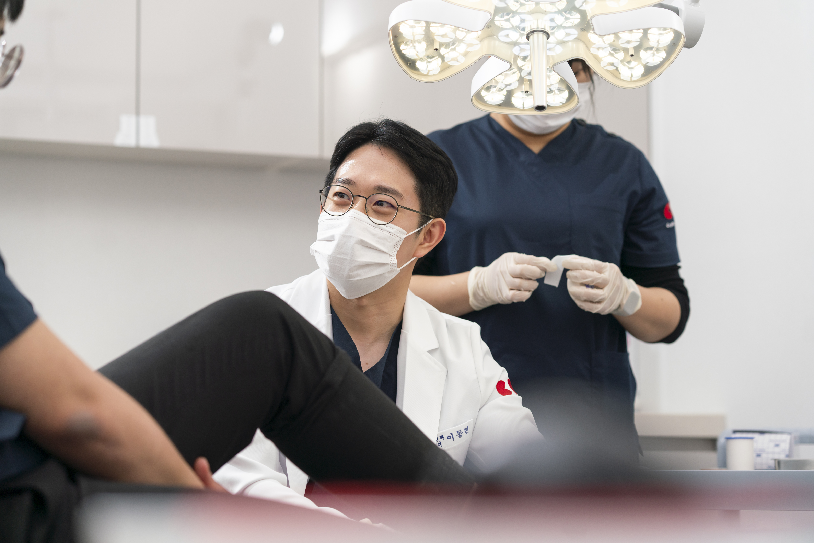

CORE VALUE
여의도기통찬의 핵심가치
진료의 출발점과 판단의 기준을 한결같이 지키겠습니다.
진심Sincerity
내 가족을 대하는 마음‘내 가족이라면 어떻게 할까’라는 마음에서 진료를 시작합니다.
작은 불편함도 가볍게 넘기지 않고,
환자에게 꼭 필요한 치료인지 한 번 더 고민하겠습니다.
집요함Persistence
통증의 원인까지눈앞의 증상이나 검사 결과에만 머물지 않고,통증의 시작과 양상, 진찰에서 얻은 단서를 살펴
왜 아픈지 원인을 찾아가겠습니다.
신뢰Trust
이해하고 납득할 수 있는 진료환자의 상태와 치료가 필요한 이유를 정직하게 설명하고
> 치료의 방향과 과정을 충분히 안내하겠습니다.
OUR PROMISE
여의도기통찬의 약속

- 01
언제나 환자의 입장에서 생각하겠습니다.
진료의 모든 순간에 ‘환자에게 무엇이 가장 필요할까’를 먼저 생각하고,
환자의 상태와 일상을 함께 고려해 치료 방향을 고민하겠습니다. - 02
통증의 원인을 세심하게 살피겠습니다.
검사 결과와 눈앞의 증상에만 머물지 않고,
통증의 시작과 양상, 진찰에서 얻은 단서를 세심하게 살펴
왜 아픈지 원인을 찾아가겠습니다. - 03
정직함으로 신뢰를 쌓겠습니다.
환자의 상태와 치료가 필요한 이유를 솔직하게 설명하고,
치료의 방향과 과정을 정직하게 안내하며
믿고 치료받을 수 있는 관계를 만들어가겠습니다. - 04
작은 목소리에도 귀 기울이겠습니다.
환자가 느끼는 통증과 불편함에는 저마다의 이야기가 있다고 생각합니다.
작은 증상과 사소해 보이는 이야기까지 진지하게 경청하며,
환자의 입장에서 공감하는 진료를 하겠습니다. - 05
더 나은 진료를 위해 끊임없이 배우겠습니다.
익숙함에 안주하지 않고 새로운 지식과 치료에 꾸준히 관심을 기울이며,
배움과 연구를 멈추지 않겠습니다.오늘보다 더 나은 진료로 환자에게 보답하겠습니다.